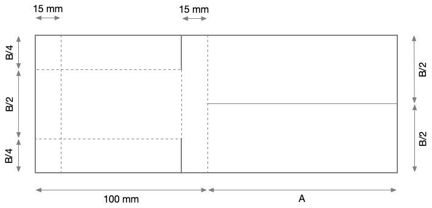

Elicottero
Un esperimento fattoriale
Questa è la descrizione di un esercizio pratico sulla progettazione, esecuzione e analisi di un piano fattoriale.
Descrizione dell’esperimento
Partendo da un foglio di carta e seguendo lo schema costruttivo seguente è possibile ottenere un elicottero che, lasciato cadere da una certa altezza, ruota su se stesso rallentando significativamente la discesa.

Ci interessa capire la relazione tra alcuni “parametri di progetto” dell’elicottero e il tempo di caduta, assunto come indice di merito del sistema.
In particolare, ci focalizziamo sui seguenti quattro fattori (quindi un piano fattoriale nominalmente \(2^4\))
- \(A\): lunghezza delle ali (mm, quantitativo): vaori a scelta, ma il modello non deve superare la larghezza di un foglio A4 (210 mm)
- \(B\): larghezza del corpo (mm, quantitativo): valori a scelta, ma il modello non deve superare metà altezza di un foglio A4
- \(C\): tipo di carta (g/m\(^2\), quantitativo/qualitativo): scegliere due tipi di carta con grammatura sensibilmente differente
- \(D\): direzione di piega dei lembi (concorde/discorde, qualitativo)
Il tipo di carta \(C\) è un parametro quantitativo, dato che la grammatura può essere misurata. Tuttavia lo consideriamo qualitativo, nel senso che assumiamo di non poter accedere a grammature intermedie. Quindi, nella valutazione di eventuali modelli di secondo grado, il tipo di carta va considerato come puramente qualitativo.
Riguardo il fattore \(D\): concorde significa che durante la rotazione la tasca formata dalla piega segue la piega stessa; discorde significa l’opposto, cioè che la tasca tende a “riempirsi d’aria”.
Il tempo di caduta deve essere misurato su un’unica altezza di riferimento, scelta a piacere. Per aumentare la sensibilità e la precisione della misura, si consiglia di scegliere una caduta di almeno 10 m. Si noti anche che cadute troppo elevate aumentano la probabilità che il volo sia disturbato, ad es. da refoli d’aria, aumentando la variabilità e riducendo la potenza dei test.
Obiettivi
Vogliamo:
- evidenziare se c’è correlazione tra i fattori
- determinare se è sufficiente un modello lineare di primo grado o se è necessario un modello di secondo grado
- definire l’opportuno modello empirico che mi predica il tempo di discesa da un’altezza di riferimento (scelta arbitrariamente) in funzione dei tre fattori
- un’indicazione del modello migliore
Modalità
- Procedere mediante la definizione di un piano fattoriale con 4 fattori
- Verificare se il modello di primo grado è sufficiente mediante un piano fattoriale aumentato
- Se necessario ricorrere a un CCD per valutare le curvature
- Decidere in autonomia se replicare il piano o se ricorrere a frazionamenti
- Lavorare in massimo due persone per esperimento
- Utilizzare la libreria
adas.utils - Stilare un report in PDF per ogni gruppo, partendo da un documento di analisi
.Rmd
La relazione finale deve chiaramente evidenziare tutti i passi dell’esperimento, includa la preparazione dei campioni e la conduzione dei test, anche mediante fotografie. Idealmente, deve essere suddivisa in sezioni principali:
- Introduzione e obiettivi
- Modalità sperimentali: preparazione dei campioni
- Piano fattoriale, conduzione e analisi delle misure
- Conclusioni
Nota: produzione del report finale
Il report finale sarà accettato esclusivamente in forma di un unico documento PDF (massimo 100MB).
Per creare il PDF a partire dal notebook .Rmd è necessario installare LaTeX. In RStudio, seguire queste istruzioni:
- installare il pacchetto
tinytex:install.packages("tinytex") - installare LaTeX:
tinytex::install_tinytex() - installare il pacchetto italiano di LaTeX:
tinytex::tlmgr_install("babel-italian")
L’ultimo punto è opzionale, ma fornisce il supporto per la sillabazione italiana e la traduzione delle etichette (ad es. Figura invece di Figure), a patto di inserire nell’intestazione del documento, a livello di indentazione 0:
header-includes: \usepackage[italian]{babel}Ad esempio, un’intestazione minima potrebbe essere la seguente (si noti anche la modalità di definizione della dimensione delle figure nel chunck di setup e la modalità di inserimento dei riferimenti alle figure):
---
title: "Elicottero di carta"
subtitle: "Esperimento fattoriale"
author: "Marco Rossi (123567), Matteo Rizzi (123456)"
date: "`r Sys.Date()`"
output:
pdf_document:
toc: true
number_sections: true
header-includes: \usepackage[italian]{babel}
---
```{r setup, include=FALSE}
knitr::opts_chunk$set(
echo = TRUE,
fig.align = "center",
fig.dim = c(8, 5), # rapporto L/H figure
out.width="10cm" # dimensioni effettive figure
)
```
# Figure e plot
Per includere una figura flottante bisogna specificare la didascalia
con `fig.cap`, come in Figura \ref{fig:pressure}.
```{r pressure, echo=FALSE, fig.cap="Figura esempio"}
plot(pressure)
```
Si noti che \LaTeX posiziona con libertà le figure flottanti nel
testo, cercando di minimizzare il numero di pagine e di spazi vuoti.
Non cercare di posizionare manualmente le figure: i riferimenti alle
etichette servono proprio a questo scopo.
# Equazioni
Anche alle equazioni è possibile fare riferimento. Anzitutto bisogna
inserire una equazione *fuori linea* (cioè non in linea col testo),
associandole una *label*:
\begin{equation}
y = a + bx + cx^2 \label{eq:model}
\end{equation}
Poi si può fare riferimento all'Eq. \ref{eq:model} in questo modo.
Le equazioni inserite con il doppio dollaro invece non sono numerate:
$$
y = ax + b
$$